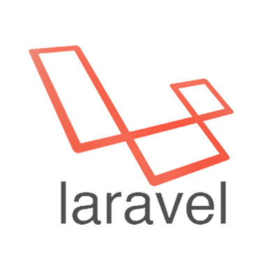

React es una biblioteca Javascript de código abierto usada para crear interfaces de usuario con el objetivo de animar al
desarrollo de aplicaciones en una sola página. Es mantenido por Facebook, Instagram y una comunidad de desarrolladores
independientes y compañías.
React intenta ayudar a los desarrolladores a construir aplicaciones que usan datos que cambian todo el tiempo. Su
objetivo es ser sencillo, declarativo y fácil de combinar. React sólo maneja la interfaz de usuario en una aplicación;
está construida únicamente para utilizar el patrón de diseño modelo–vista–controlador (MVC), y puede ser utilizada
conjuntamente con otras bibliotecas de Javascript o más grandes #MVC como AngularJS. También puede ser utilizado
con las extensiones de React-based que se encargan de las partes no-UI (no gráficas) de una aplicación web.

Angular es un framework para aplicaciones web desarrollado en TypeScript, de código abierto, mantenido por Google, que se
utiliza para crear y mantener aplicaciones web de una sola página. Su objetivo es aumentar las aplicaciones basadas
en navegador con capacidad de Modelo Vista Controlador (MVC), en un esfuerzo para hacer que el desarrollo y las pruebas
sean más fáciles.
La biblioteca lee el HTML que contiene atributos de las etiquetas personalizadas adicionales, entonces obedece a
las directivas de los atributos personalizados, y une las piezas de entrada o salida de la página a un modelo representado
por las variables estándar de JavaScript. Los valores de las variables de JavaScript se pueden configurar manualmente,
o ser recuperados de recursos JSON estáticos o dinámicos.

Laravel es un framework de código abierto para desarrollar aplicaciones y servicios web con PHP 5 y PHP 7. Su filosofía es
desarrollar código PHP de forma elegante y simple, evitando el "código espagueti". Fue creado en 2011 y tiene una
gran influencia de frameworks como Ruby on Rails, Sinatra y ASP.NET MVC.
Laravel tiene como objetivo ser un framework que permita el uso de una sintaxis elegante y expresiva para crear código
de forma sencilla y permitiendo multitud de funcionalidades. Intenta aprovechar lo mejor de otros frameworks y aprovechar
las características de las últimas versiones de PHP.